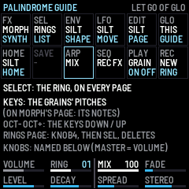
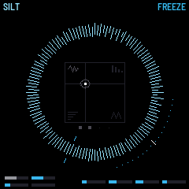
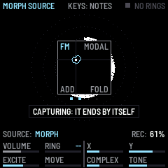
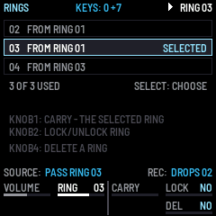
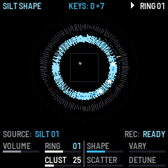
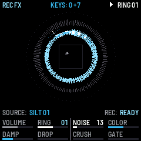

Manual
SILT is the instrument. MORPH is the injector. Each recording becomes a new ring. One press does everything; hold GLO and the screen shows what every button does.
Play in the browser · Install firmware
Quick start
- The FM-1 starts on SILT with no rings. Press FX for MORPH and raise MASTER.
- Press REC, then play a note or two. The capture starts with the first note; RING 01 fills on the screen and finishes by itself, and you are back on SILT with it selected.
- Press PLAY for grains, or tap keys to play them yourself. Turn POSITION, SIZE and DENSITY.
- Press REC again. What SILT is playing becomes RING 02; RING 01 stays as it was.
- Turn SELECT to go between the rings. Each one keeps its own sound and its own settings.
- Keep going. With three rings, each new capture takes the place of the oldest.
Buttons
Every button is one press. A page stays open until you open another.
| Button | Does |
|---|---|
| EDIT | Opens SILT |
| HOME | Back to SILT from anywhere; clears nothing |
| FX | Opens MORPH SOURCE; the keys become its notes |
| SEL | Opens RINGS; confirms a delete armed there |
| ENV | Opens SILT SHAPE |
| LFO | Opens SILT MOTION |
| ARP | Opens MIX |
| SEQ | Opens REC FX |
| GLO (hold) | The guide: what every button does, on the screen |
| REC | Captures the SOURCE into a new ring |
| PLAY | Grains on / off |
| OCT− / OCT+ | Shift the keys an octave; sounding notes and pitches stay |
| SAVE | Not used; the screen says so |
SELECT chooses the ring on every page. MASTER is always volume.

SILT
EDIT or HOME — granular playback of the selected ring

Plays up to 16 grains from the selected ring. Each grain has a position, length, pitch and direction, and stays on the ring it started on.
| Knob | Control | Function |
|---|---|---|
| KNOB1 | POSITION | Where grains start, round the ring |
| KNOB2 | SIZE | 20–500 ms |
| KNOB3 | DENSITY | 1–40 starts/sec |
| KNOB4 | SPRAY | Random start position |
| SELECT | RING | Which ring plays and is edited |
| ALGORITHM | REVERSE | Reverse probability |
| PRESETS | PITCH | −24 to +24 semitones |
Grain keys
Everywhere except MORPH's page the keys are grain pitches. Tap up to four to latch them; tap again to release. A new key triggers grains at once, even with PLAY off. C is the recorded pitch at the default octave. CLUSTER (SILT SHAPE) sets whether pitches play in turn or together. The top line shows them: KEYS: 0 +7.
The screen
Rings are concentric circles, the oldest innermost, each drawn from its own recording. The selected ring is bright and dense. The tick outside it is POSITION and the dotted arc is SPRAY; moving dots are grains. The small square in the middle is MORPH. Under the rings: SOURCE (what REC would capture) and REC: READY, ARMED, a percentage while capturing, or DROPS 01 (the ring the next capture replaces).
MORPH
FX — the sound source

Four synthesis methods blend across the XY square. A key strikes a note, up to four at once; each dies away by itself, as long as DECAY (on MIX) says. With DECAY at the top (HOLD) notes stay on until their key is tapped again.
MORPH is heard on this page and while it is being captured. Everywhere else you hear the grains alone, so a sound and its recording do not pile up; MIX brings MORPH back in.
| Knob | Control | Function |
|---|---|---|
| KNOB1 | X | Left ↔ right |
| KNOB2 | Y | Bottom ↔ top |
| KNOB3 | COMPLEX | Harmonic richness |
| KNOB4 | TONE | Dark ↔ bright low-pass |
| SELECT | RING | Which ring plays and is edited |
| ALGORITHM | MOVE | Automatic XY orbit |
| PRESETS | EXCITE | Modal ringing time |
Vector square
| Corner | Sound |
|---|---|
| Top left · FM | Frequency modulation |
| Top right · MODAL | Struck, decaying bells |
| Bottom left · ADD | Added harmonics |
| Bottom right · FOLD | Wavefolding |
The white dot is the current mix; the waveform surrounds it. The dotted orbit shows MOVE. Four pips below show the voices. SPREAD (their stereo width) is on MIX.
Rings and capture
REC — one press, one new ring

A ring is 1.49 seconds of sound. There is room for three. A capture always makes a new ring; with three, the oldest gives up its place.
| SOURCE | When | What is recorded |
|---|---|---|
| MORPH | On MORPH's page, and whenever there are no rings | MORPH alone |
| SILT 02 | Everywhere else, once a ring exists | SILT's grains of the selected ring alone |
- The capture runs for one ring's length and ends by itself. Pressing REC meanwhile does nothing.
- The new ring appears only when it is complete, evened in level, and is then selected. Its number never changes.
- A ring made from SILT starts with PITCH, REVERSE, SCATTER and DETUNE at rest, so they are not applied twice.
- Nothing sounding (no notes, or no grains): REC is armed and the capture starts with the next sound, so a struck note is caught from its start. REC again takes the arming off.
- Three rings already: the oldest ring makes room for the new one, but never the selected ring. The screen names it first:
REC: DROPS 01. - Go back to an older ring, change it and press REC: that is a new branch.
RINGS
SEL — the rings and where they came from

| Knob | Control | Function |
|---|---|---|
| SELECT | RING | Choose a ring |
| KNOB1 | CARRY | How much of the selected ring is copied under the next capture |
| KNOB4 | DELETE | One step right: arm deleting the selected ring. Two: arm clearing everything |
A delete happens only when SEL is pressed while it is armed. Any other button calls it off.
SILT SHAPE and MOTION
ENV — how grains differ

| Knob | Control | Function |
|---|---|---|
| KNOB1 | SHAPE | Struck → bell → swell |
| KNOB2 | VARY | Random length, up to ¼–4× SIZE |
| KNOB3 | SCATTER | Random octave and interval jumps |
| KNOB4 | DETUNE | Up to ±50 cents per grain |
| ALGORITHM | CLUSTER | 1–4 simultaneous grains |
LFO — movement
| Knob | Control | Function |
|---|---|---|
| KNOB1 | SCAN | Automatic POSITION movement |
| KNOB2 | TIMING | Regular → irregular starts |
Every SILT setting on SILT, SHAPE and MOTION, and STEREO on MIX, belongs to the selected ring.
MIX and REC FX
ARP — MIX. SEQ — REC FX.
| Knob | MIX | Function |
|---|---|---|
| KNOB1 | MIX | MORPH ↔ SILT balance; starts on SILT alone |
| KNOB2 | FADE | MORPH note attack/release |
| KNOB3 | SPREAD | MORPH voice stereo width |
| KNOB4 | STEREO | Grain stereo placement |
| ALGORITHM | DECAY | How long a struck MORPH note rings, 0.1–10 s; at the top, HOLD |
| PRESETS | LEVEL | Overall output level |

REC FX shapes what the next capture records. It never changes a ring that exists.
| Knob | REC FX | Function |
|---|---|---|
| KNOB1 | NOISE | Add hiss (captures noise alone with no notes) |
| KNOB2 | COLOR | Low rumble → bright hiss |
| KNOB3 | CRUSH | Reduce amplitude resolution |
| KNOB4 | GATE | Silence below a threshold |
| ALGORITHM | DROP | Random gaps |
| PRESETS | DAMP | Darken the capture |
Patch ideas
Capture one or two MORPH notes as RING 01 first (FX, REC, play them). Values are displayed knob percentages.
| Patch | Settings |
|---|---|
| Chord cloud | Keys C/G/C; CLUSTER 100, SHAPE 50, SIZE 70, DENSITY 40 |
| Plucked arp | 3–4 keys; CLUSTER 0, TIMING 0, SHAPE 0, SIZE 30, DENSITY 60 |
| Shimmer | SCATTER 40, DETUNE 60, REVERSE 50, SIZE 70, STEREO 100 |
| Rain | TIMING 100, VARY 80, SIZE 20, SPRAY 100, DENSITY 80 |
| Generations | Play a patch above, REC, change PITCH, REC again: three rings, each a step further |
| Worn copy | REC FX: NOISE 30, CRUSH 40, DROP 30; REC from SILT; repeat for more wear |
| Layered | RINGS: CARRY 60; FX, REC, play new notes: the new ring is the old one with MORPH on top |
| Drone | MIX: DECAY to HOLD, MIX 50; FX, latch notes: MORPH stays under the grains |
Notes
Experimental firmware. Simulator-tested, not yet validated on physical FM-1 hardware. Try the browser before installing. Three rings of 1.49 s; they and all settings live in memory only and are lost at power-off (SAVE is not available). No MIDI input. New grains are skipped when all 16 are in use. The installer can restore stock firmware or switch instruments without overwriting STRATA's saved sound.